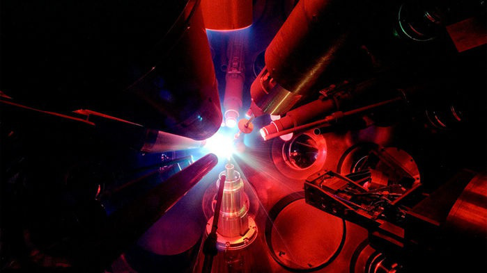
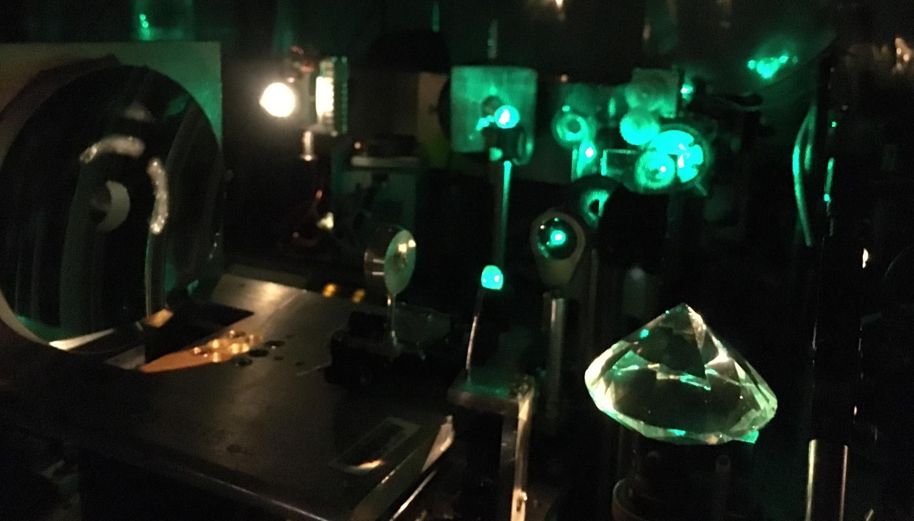

Background & interests
About me
I am an applied physicist and technology founder, currently CEO and Chief Product Officer of AMWAL Tech. I lead the development of embedded-finance infrastructure built on biometric identity, working with lenders, banks and payment networks across MENA on credit provisioning and authentication.
Alongside AMWAL, I lead a team of PhD scientists at Mercor contributing physical-sciences expertise to frontier-model post-training and reinforcement learning. I also founded Madena AI, an initiative focused on Arabic datasets, reward models and evaluations. My research interests include scalable oversight and the reliability of rewards and verifiers in scientific and professional domains.
My background is in experimental physics. I earned my PhD in Applied Physics at Harvard and worked as an assistant professor and senior scientist at the University of Rochester’s Laboratory for Laser Energetics from 2017 to 2021. My research explored planetary interiors, metallic hydrogen and matter under extreme conditions. I later worked in AI and data consulting at McKinsey’s Digital Practice and QuantumBlack.
Current work
AMWAL Tech
I lead product development and teams building embedded-finance and biometric identity infrastructure for lenders and payment networks across MENA.
Mercor
I lead PhD scientists contributing scientific expertise and review to frontier-model post-training and reinforcement learning.
Madena AI
An initiative focused on Arabic datasets, reward models and evaluations.
Explore the researchArabic reward reliability
I study how evaluators and reward signals behave in Arabic legal tasks, using synthetic cases and expert rubric feedback to identify verifier failures.
Explore the researchPhysics research background
High pressure geo and planetary chemistry
I investigate the processes that govern the chemical cycling of volatile elements (H,C,O), with emphasis on water and carbon, between the surface and the internal resevoirs of terrestrial planets.
Spectroscopy, opacity, charge and mass transport measurements
I build new instrumentation to characterize the optical and electronic conduction states of several materials at varying conditions that span irradiated atmospheres to deep interiors. I am interested in the atmospheric opacity of gas giants, thermal and electrical conductivity of earth mantle, and rock-water interaction.
Thermal, magnetic states of extrasolar planets
I am interested in developing better models for the thermal and magnetic evolution of terrestrial and giant planets.
Extreme condition physics
I study the effects of degeneracy and strong correlation on the microphysical states of extreme matter


Education
2013 - 2017
Harvard University
PhD in Applied physics
NASA Earth & Space Science Fellow 2014-2017
The Goldman Sachs Fellow 2014-2015
2011 - 2013
Harvard University
AM in Physics
2008 - 2010
University of Illinois, Urbana Champaing
B.Sc. in Physics, Highest Distinction
The 2009 MIT ASO scientific Achievement Award
http://news.mit.edu/2009/arab-student-award-0423
2005 - 2008
American University in Cairo
LEAD scholar, "Egypt's most prestigious leadership scholarship"